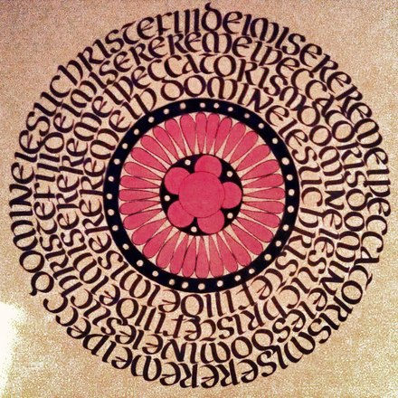

Возвращаясь из порой утомительного, но вдохновляющего многомесячного путешествия через Евразию и Атлантику, я знал: совершён ещё один оборот колеса, и настало время синтеза, консервации и упрочения понятого.
Всё будто началось сначала: размеренные вечера, книги, записи; занятия древнегреческим и каллиграфией; поэзия.
Тогда же, в последний день года, развернув врученный супругой свёрток из грубой коричневой бумаги, я увидел золотую обложку с чёрным полем и калейдоскоп витража — подобную розу я вскоре напишу в качестве этюда, — и сразу понял, что у меня в руках «Герметическая традиция» Юлиуса Эволы, книга мне известная, но до того момента не читанная.
О работах такого рода сложно писать однозначно и плоско: понравилось или нет. Это не та книга, которая непременно должна нравиться. Она может вдохновить, потрясти, дать ответы на вопросы... или остаться непонятой. И читать её можно по-разному: как очередной сборник странных историй тёмной древности или же как свидетельство о вечном.
Для меня «Герметическая традиция» барона Эволы явилась путеводителем по длинному извилистому лабиринту Царского Искусства, где нет тупиков и разворотов, но только лишь один закон: ora, ora, labora.
Книга рассматривает алхимию с эзотерических позиций, отграничивая собственно Делание от его возможного прикладного результата: трансмутации металлов в золото.
В сжатой форме этот труд проводит читателя по всем стадиям Работы, давая необходимые комментарии и множественные ссылки на источники, обилие которых упрощает дальнейшее изучение и углубление в Искусство. Полезность издания увеличивает мастерская работа переводчика, чьи комментарии и поправки ссылок, данных автором, упрочают понимание столь сложных вопросов.
Читать книгу не просто, о чём ещё в предисловии предупреждает сам автор. Но такие книги не должны быть легко читаемы. Если же обращаться к ней снова и снова, если постепенно прояснять тёмные связи между образами и понятиями, если вопрошать, то можно получить ответы.
Мне как принадлежащему гностической традиции удалось обнаружить в ней ответы и на вопросы не строго алхимического порядка. Текст прояснил астрологическую символику, натолкнул на некоторые мысли по поводу числовых загадок, оказался полезен в понимании вечного бодрствования, важного вопроса, практически не раскрытого в раннехристианских источниках.
Отдельно стоит отметить форму. Переводчику удалось сохранить слог Юлиуса Эволы, его понятийный аппарат, развиваемый от работы к работе, но неизменно узнаваемый. Многоязычность цитат подстегнёт интеллект любознательного читателя, правда, cum grano salis: многообразие греческих диакритических знаков представлено единственной оксией, расставленной порой вне всяких правил. Но это лишь мельчайшие двусмысленности в соцветии образов тайного Искусства.
Да, ни один труд не способен раскрыть смысл учения, но каждая работа, каждая попытка здраво и со знанием дела рассмотреть связанные с ним вопросы, достойны уважения. Тем более такое серьёзное и всестороннее исследование по праву именитого автора. Перевод таких книг важен, а переводы хорошие очень ценны.
Подводя итог, можно сказать, что «Герметическая традиция» Юлиуса Эволы вряд ли может стать единственной настольной книгой ищущего, но она может явиться необходимым побуждением взглянуть во тьму забвения и увидеть слабую, но никогда не стихающую пульсацию Источника.
* * *
В отблесках сердца руды Солнце,
Как отражённый Луной свет.
В воле отбелит кости
В смерть.
Заревом пурпур румянит ночь,
Уж не летит, затаился сон.
И надо всем отлитый вновь
Звон.
25 ноября 2016 г.